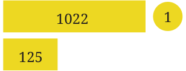
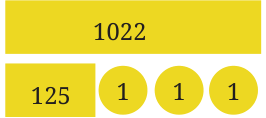
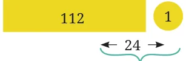
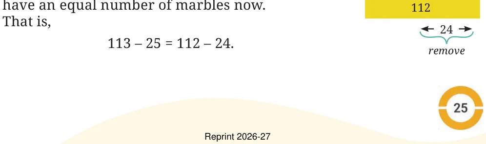
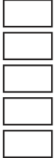

- 1.Fill in the blanks to make the expressions equal on both sides of
the = sign:
- (a)\(13 + 4 =\) ____ \(+ 6\) (b) \(22 +\) ____ \(= 6 \times 5\)
- (c)\(8 \times\) ____ \(= 64 \div 2\) (d) \(34 -\) ____ \(= 25\)
- 2.Arrange the following expressions in ascending (increasing) order
of their values.
- (a)\(67 - 19\) (b) \(67 - 20\)
- (c)\(35 + 25\) (d) \(5 \times 11\)
- (e)\(120 \div 3\)
Example 2: Which is greater? \(1023 + 125\) or \(1022 + 128\)? Imagining a situation could help us answer this Raja \((1023 + 125)\) without finding the values. Raja had 1023 marbles and got 125 more today. Now he has \(1023 + 125\) marbles. Joy had 1022 marbles and got 128 more today. Now he has \(1022 + 128\) marbles. Who

has more? Joy \((1022 + 128)\)
This situation can be represented as shown in the picture on the right. To begin with, Raja had 1 more marble than Joy. But Joy got 3 more marbles than Raja today. We can see that Joy has (two) more marbles than Raja now. That is,

\(1023 + 125 < 1022 + 128\).
Example 3: Which is greater? \(113 - 25\) or \(112 - 24\)? Raja \((113 - 25)\) Imagine a situation, Raja had 113 marbles and lost 25 of them. He has \(113 - 25\) marbles. Joy had 112 marbles and lost 24 today. He has \(112 - 24\) marbles. Who has more marbles left with them? remove Raja had 1 marble more than Joy. But he also

lost 1 marble more than Joy did. Therefore, they

Use ‘>’ or ‘<’ or ‘=’ in each of the following expressions to compare them. Can you do it without complicated calculations? Explain your thinking in each case.
- (a)\(245 + 289 246 + 285\)

- (b)\(273 - 145 272 - 144\)
- (c)\(364 + 587 363 + 589\)
- (d)\(124 + 245 129 + 245\)
- (e)\(213 - 77 214 - 76\)